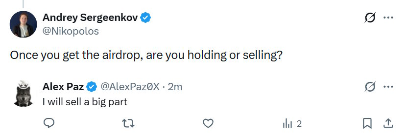

The Case for a Loss-Based Polymarket Airdrop
A recent study found that the top 1% of Polymarket users capture 84% of all trading profits, mostly at the expense of casual traders. The authors concluded that “the informational benefits of prediction markets come at a cost to unsophisticated participants.”
Polymarket fully capitalizes on this, using prediction accuracy as the platform’s main selling point. They describe themselves as “the best source of real-time event probabilities” and recently launched a portal that helps journalists embed Polymarket odds directly into their articles.
In October 2025, Polymarket CMO Matthew Modabber announced that the platform is preparing for an airdrop: “There will be a token, there will be an airdrop.” Polymarket has not published an exact TGE date, official eligibility criteria, or allocation percentages.
Ahead of the airdrop, many groups of “farmers” started wash trading to meet the presumed airdrop criteria.
Shortly after the announcement, a study by Columbia Business School found that roughly 25% of all Polymarket trading volume shows signs of artificial activity. Co-author Allen Sirolly told Decrypt: “It is possibly related to airdrop farming.”
Farmers are optimizing for every metric they believe might determine eligibility: trading volume, liquidity provision, number of markets traded, active days, and even UMA staking.
The Columbia study notes that any “potential future airdrop should be designed to exclude such activities” because airdrop farmers contribute neither liquidity nor information to the prediction market.
Most Airdrops End With a Rug Pull Chart
According to a Keyrock report, 88% of airdropped tokens lose value within three months of launch, and most DeFi tokens lose 60–90% of their launch price as farmers exit their positions.

A study by Messias and Yaish found that up to 65.75% of tokens were sold shortly after an airdrop, and the primary beneficiaries were farmers, described as “highly skilled users who employ sophisticated tactics to increase the share of tokens that they receive.”
For example, the ETHFI (Ether.fi) airdrop in March 2024. The token launched at $4.13 and dropped 25% within hours as farmers claimed and immediately sold their allocations.
Another example is STRK (Starknet), which launched at $7.41 in February 2024 and dropped to $1.87 shortly after. Before the airdrop, Yearn.finance developer Banteg warned that over 700,000 wallets of the 1.3 million eligible for STRK were linked to accounts controlled by airdrop hunters.
An airdrop like this would repeat the fate of most airdrops and deal a serious blow to Polymarket’s reputation in an already challenging regulatory environment. Polymarket is banned in 34 countries, facing lawsuits in at least 11 US states, and the CFTC is actively seeking public comment on whether prediction markets serve the public interest.
There is One Other Way
Whatever the airdrop criteria may be, I propose that the Polymarket team use this information vacuum around the terms to reconsider them.
This metric is impossible to farm or fake, and certainly could not have been predicted.
It’s a kind way of saying thank you to the people whose losses make Polymarket’s intelligence possible.
The behavior of grateful users who unexpectedly receive compensation for their losses will be very different from that of farmers who deliberately exploit the platform for a one-time gain. Users who feel recognized are more likely to hold and stay.
And it would be best to announce this urgently, before the CFTC’s comment period closes, which directly addresses wash trading, market manipulation, and whether prediction markets serve the public interest.
Right now, the Polymarket team has a chance to turn the airdrop from a typically doomed endeavor into a strategic PR and regulatory move.